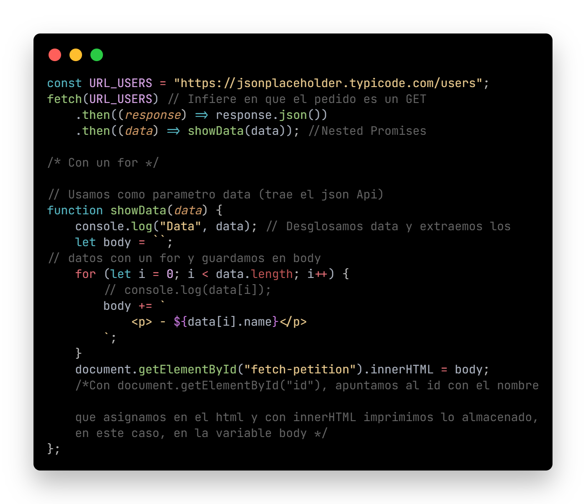

Intro Asincronismo - Fetch JS
Clase 10 - 01/08 - Link clase 10 - YouTube
Temas:
- Fetch
- Ejemplo de impresion en el DOM de datos obtenidos de una API con fetch
En archivo .js:
- Fetch con .then()
- Fetch con .then() + for
- Fetch con .then() + map
Fetch
-
Fetch ofrece una definición genérica de los objetos Request y Response ( y otras cosas relacionadas con las solicitudes de red ). Esto permitirá su uso donde sea necesario en un futuro, ya sea para operadores de servicios, API caché y otras cosas similares que manipulen o modifiquen las solicitudes y respuestas, o cualquier otro tipo de caso de uso que pudiera requerirle la generación de sus propias respuestas mediante programación.
Veremos 3 formas distintas de lograr un mismo resultado* Ver código funcional en archivo ./js/fetch.js

-
Aquí abajo, se muestra el DOM en tiempo real, impreso con innertHTML que es el mismo resultado con cualquiera de las 3 opciones arriba detalladas y se le aplica estilo con css